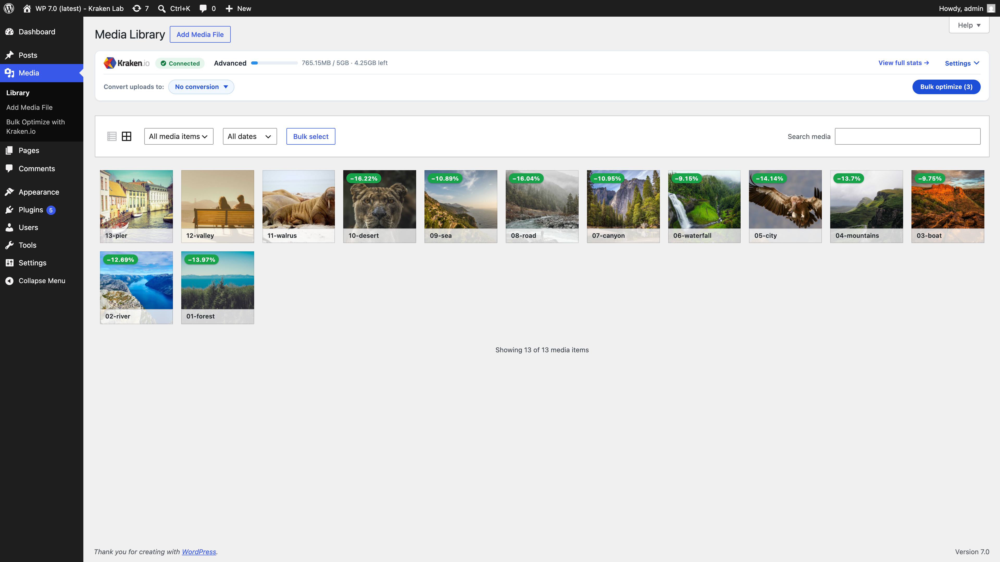
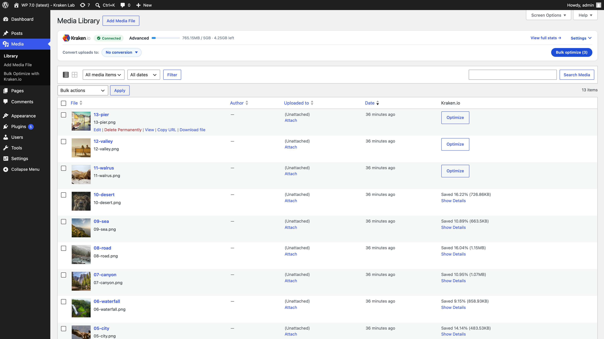
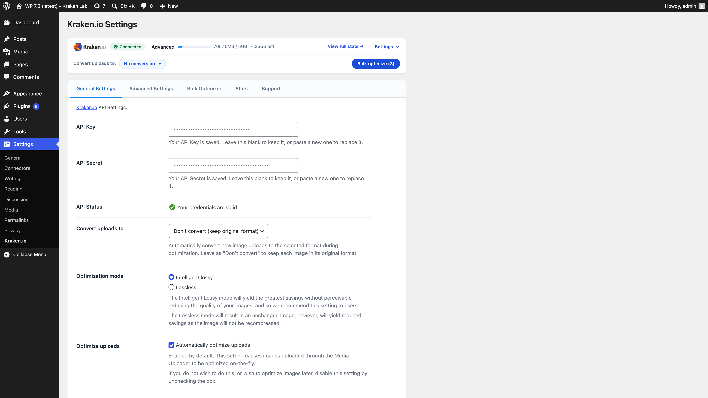
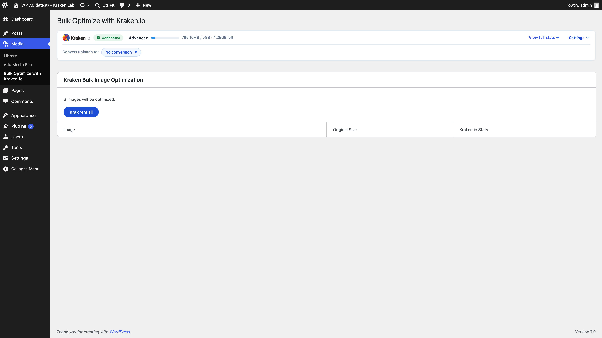
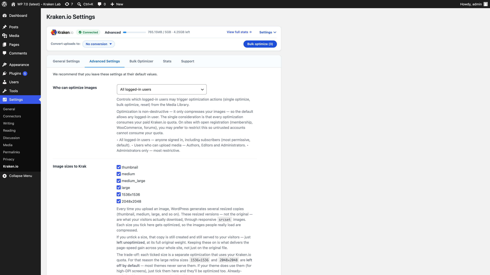
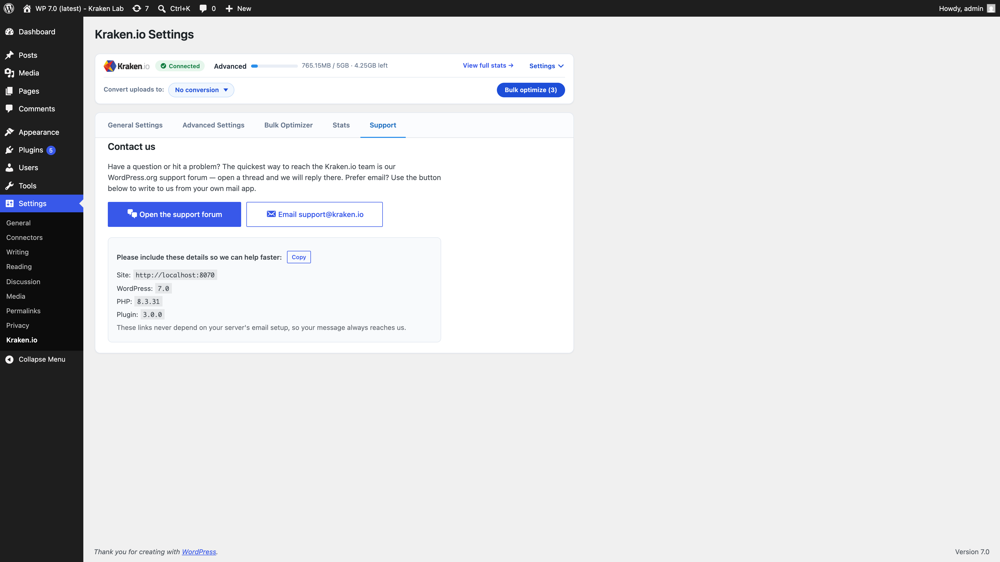

⚡ Compress, resize and convert your WordPress images to WebP, AVIF and more — automatically. Faster pages, smaller files, same quality.
Slow pages cost you visitors, search rankings and sales — and over-sized images are almost always the culprit. Kraken.io Image Optimizer fixes that on autopilot: it compresses, resizes and converts every image you upload — and every thumbnail WordPress generates — so your whole site loads lighter and faster, without you lifting a finger.
Every upload is sent to Kraken.io, one of the most advanced image-optimization APIs on the web, optimized in the cloud, and pulled straight back into your Media Library. No binaries, no command line, no server tweaks — install it, add your API key, and stop worrying about heavy images.
At its heart is Kraken.io's intelligent lossy engine: for every single image it finds the exact point where the file is as small as possible while staying visually indistinguishable from the original. Expect to cut 60% or more off your image weight — exactly the win Google PageSpeed and Core Web Vitals reward.
From a personal blog to a busy WooCommerce store with tens of thousands of products, it's an install-and-forget solution that just works.
✨ Why Kraken.io
- Intelligent lossy & lossless — pick maximum savings with no visible quality loss, or pixel-perfect lossless. Per-image JPEG quality and chroma subsampling control for power users.
- Convert between formats — turn uploads into WebP, AVIF, JPEG, PNG or GIF. Reach for next-gen WebP or AVIF for the biggest savings (and to clear Google's "Serve images in next-gen formats" audit), or switch between the classics — whatever fits your site.
- Optimizes everything WordPress serves — the full-size image and every thumbnail size (thumbnail, medium, large, …) that actually reaches your visitors through responsive
srcset. - Smart resizing — cap oversized uploads to a maximum width/height; resized images are enhanced to stay sharp and avoid haloing.
- Bulk "Krak 'em all" — optimize your entire existing library from a dedicated Bulk Optimize screen or the Media Library bulk action, with live progress.
- A control panel that tells you everything — a Kraken.io summary panel on the Media Library, Add Media and Plugins screens (plus a Dashboard widget) shows your connection status, plan, quota usage, active settings and supported formats at a glance.
- Per-image savings & error badges — see exactly how much each image saved, right in the Media grid and list.
- Plays nice with your stack — works with multisite, page builders, CDNs and local/dev sites. Detects other optimizer plugins and offers one-click deactivation so they don't fight over your images.
🖼️ Supported formats
JPEG, PNG, animated GIF, WebP, AVIF, HEIC/HEIF and PDF. (For security, raw SVG upload is intentionally not enabled — see the FAQ.)
⚡ Built for Core Web Vitals
Heavy images are the number-one cause of slow pages. By compressing every size, converting to WebP/AVIF and right-sizing oversized uploads, Kraken.io directly targets the audits that move your score: Properly size images, Efficiently encode images, Serve images in next-gen formats and Largest Contentful Paint.
🎛️ Your images, your control
- Choose intelligent lossy or lossless, globally.
- Convert uploads to WebP/AVIF/JPEG/PNG/GIF on the fly — synced live between the panel and settings.
- Preserve selected EXIF tags (Date, Copyright, Geotag, Orientation, Profile) or strip them for the smallest files.
- Auto-orient photos from phones and cameras by their EXIF orientation.
- Decide who can optimize — all logged-in users, authors and up, or administrators only.
- Pick exactly which image sizes to optimize (the large 1536×1536 and 2048×2048 retina sizes are off by default to save quota — turn them on if your theme serves them).
- Optimize on upload automatically, or defer and bulk-optimize later.
🔒 Private & secure by design
Your API credentials are stored write-only and masked — they are never pre-filled into the page or exposed in your site's source, so other users on the dashboard can't read them. Every action is protected by nonces and capability checks, uploads are content-verified, and all optimization happens server-to-server with Kraken.io. No secrets ever reach the browser.
🚀 Get started for free
Create a free Kraken.io account — no credit card required — and get testing quota to try the plugin and the rest of the Kraken.io toolset:
- A fully-featured optimization API with official libraries for PHP, Node.js, Python, Ruby, Java, Go and .NET
- Web Interface (free) and Web Interface PRO with resizing and sync-to-Dropbox
- URL Paster and Page Cruncher to optimize images in bulk from anywhere on the web
- Optimization history and stats, and Kraken.io Cloud Storage
You can use a single API key across as many sites as you like — there is no per-site license.
★★★★★ Excellent option for image optimization "The real power of Kraken is their 'intelligent lossy' optimization. I use it on all my sites and have never once needed to roll back an image because of too much quality degradation. It is a perfect solution as is." — collin
★★★★★ Quality results, quality service "The plugin works really well and effortlessly, and the support is prompt, thoughtful, and thorough. I'm hooked." — illustrata
★★★★★ Optimize according to Google PageSpeed "Kraken was instrumental in optimizing images to comply with Google's PageSpeed analyzing tool. Our travel blog now sports Google's 'mobile friendly' tag for mobile searches." — Walter Schaerer
★★★★★ Perfect solution to speed up site! "I love this plugin! All my questions are quickly responded to and I see a huge saving in image size without losing quality. Highly recommend!" — ezone69
Connect with Kraken.io
- Website: https://kraken.io
- Plans & pricing: https://kraken.io/pricing
- Twitter / X · Facebook · GitHub
- From your WordPress admin, go to Plugins → Add New, search for Kraken.io Image Optimizer, then click Install Now and Activate. (Or upload the plugin folder to
/wp-content/plugins/and activate it from the Plugins menu.) - Create a free account and grab your API key and secret from https://kraken.io/pricing.
- Go to Settings → Kraken.io, enter your API Key and API Secret, choose your optimization preferences, and click Save. A green check confirms your credentials are valid.
- Every image you upload from now on — and all of its generated thumbnails — is optimized automatically.
- To optimize images already in your library, use the Bulk Optimize with Kraken.io screen under Media, or the Optimize button in the Media Library list view.
Will optimization reduce my image quality?
With intelligent lossy mode (the default), Kraken.io recompresses each image to a quality level below the threshold of human perception — you'll find it very hard to tell the optimized image from the original, even up close, while saving well over half the file size. Prefer pixel-perfect results? Switch to lossless mode in the settings.
Are my original images kept, and what happens if I uninstall the plugin?
The plugin replaces each image file with its optimized version, so optimized images stay on your site permanently — even after you deactivate or uninstall the plugin. Nothing reverts. (Keep your own backups as you would for any media, especially before bulk-optimizing.)
How do I optimize images I uploaded before installing the plugin?
Two ways: open Media → Bulk Optimize with Kraken.io and run Krak 'em all to process your whole library with live progress, or switch the Media Library to List view and click Optimize in the Kraken.io column for any individual image.
How do I serve WebP or AVIF images?
Set Convert uploads to (in the panel or under Settings → Kraken.io) to WebP or AVIF. New uploads are converted to that next-gen format and the smaller files are served to browsers that support them — exactly what Google PageSpeed's "Serve images in next-gen formats" audit asks for.
Which file types are supported?
JPEG, PNG, animated GIF, WebP, AVIF, HEIC/HEIF and PDF.
Why can't I upload or optimize SVG files?
SVG is XML that can carry inline scripts and event handlers, which makes raw SVG uploads a stored cross-site-scripting (XSS) risk. For your site's safety the plugin does not enable raw SVG uploads. (Kraken.io's API can optimize SVG; safe in-WordPress support requires a markup sanitizer and an explicit, high-trust opt-in, which is on the roadmap.)
Can I use one account on more than one site?
Yes. A single API key and secret can be used across as many sites and blogs as you like, including multisite networks — there is no per-site license.
Does it work on local or staging sites?
Yes. Images are uploaded to Kraken.io from your server rather than fetched by URL, so the plugin works on local, staging and unpublished installations, and behind firewalls or basic auth.
How is this different from Smush, ShortPixel, Imagify, EWWW or TinyPNG?
Kraken.io's focus is the precise balance between quality and file size: its intelligent lossy engine targets the greatest possible savings while keeping results indistinguishable from the original to the human eye. If you want maximum compression without ever having to eyeball the result against the source, this is the plugin for you — backed by a mature, standalone optimization service and API.
Will it help my Google PageSpeed / Core Web Vitals scores?
Yes — that's the point. Compressing every size, converting to WebP/AVIF and capping oversized uploads directly address Properly size images, Efficiently encode images, Serve images in next-gen formats and Largest Contentful Paint (LCP).
Can I keep or strip EXIF metadata?
Both. Choose which EXIF tags to preserve (Date, Copyright, Geotag, Orientation, Profile) under the advanced settings; anything you don't preserve is stripped for the smallest possible files.
Can I limit who is allowed to optimize images?
Yes. The Who can optimize images advanced setting lets you allow all logged-in users (default), authors and above, or administrators only — useful on membership, WooCommerce or forum sites where you don't want untrusted accounts spending your quota.
Will it change my filenames, ALT text or image URLs?
No. The plugin optimizes the image bytes in place — your filenames, URLs, ALT text, titles and captions stay exactly as they are. Your links and SEO are never touched.
Can I hide my API key from other people on the dashboard?
Yes. Your API key and secret are stored write-only and masked — never pre-filled into the settings form and never present in the page source — so other administrators and editors can't read your credentials.
How do I report a security issue?
Please email support@kraken.io with the details. We take responsible disclosure seriously and will respond promptly.
Is the plugin free? Do I need a paid plan?
The plugin is free. It connects to the Kraken.io service, which offers a free account with testing quota (no credit card required) and affordable paid plans as you grow. See current plans at https://kraken.io/pricing.
Click any screenshot to enlarge — on wordpress.org this lightbox is generated for you.












3.0.0
- New: optimization support for WebP, AVIF, HEIC, HEIF and PDF (in addition to JPEG, PNG and GIF).
- New: convert uploads to WebP, AVIF, JPEG, PNG or GIF on the fly, synced live between the Media panel and settings.
- New: a Kraken.io control panel on the Media Library, Add Media and Plugins screens, plus a Dashboard widget — showing connection status, plan, quota usage, active settings and supported formats.
- New: a dedicated Bulk Optimize with Kraken.io screen, reachable from the Media menu, the Media Library and the panel.
- New: per-image savings and error badges in the Media grid and list, updated live as images optimize.
- New: conflicting-optimizer detection with one-click deactivation of other image plugins.
- New: "Who can optimize images" capability setting (all logged-in users by default).
- New: a Support tab linking to the WordPress.org forum and a pre-filled email, with copyable diagnostics.
- Security: API key and secret are now write-only and masked — never pre-filled or exposed in the page source; nonce and capability checks on all AJAX actions; uploads are content-verified; raw SVG upload disabled as an XSS precaution.
- Change: the large 1536×1536 and 2048×2048 retina sizes are now off by default to save quota (filterable; existing choices are respected).
- Change: legacy WebP companion options are deprecated in favour of Convert.
- Fix: a now-resolved error no longer keeps showing an error badge after a successful re-optimization.
- Fix: the bulk count now lists only supported image formats (no more HTML/other files).
- Fix: division-by-zero when calculating savings on PHP 8; assets are cache-busted by file modification time.
2.7.0
- Complete plugin rewrite with a modular OOP architecture.
- Added WebP image generation and display support.
- Added background processing for image optimization.
- Added support for WP Retina 2x, NextGen Gallery and WP Offload Media.
- Security: capability and nonce checks on the reset-all AJAX handler; input sanitization; whitelist validation for the settings tab parameter.
- Requires PHP 5.6+ and WordPress 4.9+.
2.6.6
- Security release to solve https://cve.mitre.org/cgi-bin/cvename.cgi?name=CVE-2022-38454
2.6.0
- Added the ability to choose which image sizes get optimized.
- Added the ability to change the chroma subsampling scheme for JPEG images.
- Stability and compatibility improvements.
2.5.0
- Optionally disable optimization of the main image for faster uploads.
- Restrict the maximum dimensions of uploads (resizing), with sharpening enhancement.
- Force a discrete JPEG quality value; preserve selected EXIF tags; auto-orient by EXIF.
2.0.0
- Kraken.io settings moved to their own section (Settings → Kraken.io) with grouped Advanced Settings.
1.0.3
- Added the "Krak 'em all" bulk optimization feature to the Media Library Bulk Actions menu.
1.0
- First release: lossy and lossless optimization of JPG, PNG and GIF (including animated GIF), with automatic optimization of uploads and their thumbnails.
For the full version history of older releases, see the plugin's WordPress.org changelog.
3.0.0
Major update: WebP/AVIF/HEIC/PDF support, convert-on-upload, a new control panel and Bulk Optimize screen, live savings badges, and write-only masked API credentials. Recommended for everyone.